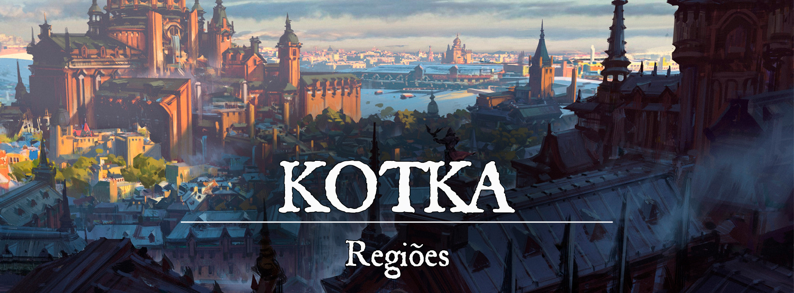

Kotka
Descrição
Kotka é uma das maiores e mais fortes cidades-estados de Gronnemar, forjada na guerra e na batalha ao longo de gerações. Foi pioneira no desenvolvimento de armas, armaduras, máquinas de guerra e estratégias militares em Gronnemar, estando presente em muitas das guerras que ocorreram no país. Atualmente, Kotka ainda permanece indiretamente em algumas campanhas de guerra, mas seu foco foi mudado para o comércio e desenvolvimento de novas tecnologias.
Descrição Visual:
g-liulian-.png |Kotka
{kind=link}
Kotka foi construída em alas separadas por muralhas, como se fossem as camadas de uma cebola. Esses distritos são separados por “Anéis” que protegem o Poleiro da Águia no centro da cidade. Incontáveis campos de colheita se estendem pelos arredores de Kotka, sempre vigiados por altas torres de pedra.
Existem três principais distritos na cidade, cada qual representando um dos três deuses venerados em Kotka: Anel da Fumaça, Anel da Justiça e Anel do Escudo.
O Anel da Fumaça é referente a Hephaestus, mas recebeu esse nome por conta da fumaça gerada das oficinas que frequentemente inunda o lugar. Hospedarias, bazares e oficinas são comuns de serem encontrados nesta região. E apesar de ser o lar do povo comum, os nobres frequentemente visitam o Anel da Fumaça para trabalhar em suas oficinas.
O Anel da Justiça é referente a Caenis e é o lar dos tribunais, bibliotecas e escolas kotkanas. É o mais organizado de todos os anéis, frequentemente patrulhado pela guarda da cidade e pelos paladinos de Caenis que visam manter a ordem. As escolas e universidades kotkanas podem ser frequentadas por qualquer pessoa que possa pagar a mensalidade, independente de suas origens. Não é totalmente incomum que alguns nobres enxerguem grandeza em jovens prodígios e decidam pagar suas mensalidades para que tenham uma chance de estudar nessas universidades.
O Anel do Escudo é referente a Kartaros e é onde se encontram os quartéis militares e os campos de treinamento de soldados kotkanos. É também onde está localizado o Poleiro da Águia, que é o castelo onde vive o rei ou rainha de Kotka.
Sociedade
População:
Internamente, há pouca variedade de linhagens em Kotka. Os humanos são predominantes dentro dos anéis, com raras exceções de elfos, anões e mestiços. Nos campos de colheita, no entanto, é possível encontrar todo o tipo de gente. A maioria descende de escravos de guerra de outras nações que foram trazidos para Kotka, mas que encontraram sua liberdade com a abolição da escravidão.
Cultura:
Os kotkanos são supersticiosos e apegados aos seus pequenos costumes. A magia não é totalmente comum, e é frequentemente vista com desconfiança pelo povo. Os nobres são educados em diversos assuntos desde jovens, principalmente na arte da guerra. Muitos nobres costumam ser caridosos com os camponeses, raramente deixando com que passem fome.
O povo comum possui uma cultura muito diversificada, acreditam em heróis e santos enviados pelos deuses e são supersticiosos. Os descendentes desse povo foram trazidos de outras terras para servirem de escravos em Kotka. O mercado de escravos rendeu muito dinheiro no passado, mas foi abolido em toda Gronnemar com o fim da Guerra das Correntes, que desfez a União de Três (que basicamente controlavam o mercado escravo da época). Os escravos se tornaram kotkanos livres e seus herdeiros criaram raízes naquela terra. Os kotkanos também adoram uma bebida fortíssima chamada Povrak.
Um cavaleiro kotkano pode nomear qualquer homem ou mulher cavaleiro, fazendo um juramento sagrado sob a bênção de Caenis. Cavaleiros pertencentes a famílias nobres carregam o sobrenome de sua Casa, mas um cavaleiro de origem humilde leva o nome de alguma região kotkana consigo (normalmente a região onde nasceu ou onde foi nomeado cavaleiro). Por exemplo: Ser Benhart de Las. Em Kotka, é utilizado o termo "Ser", ao invés de "Sir", para se referir a um cavaleiro.
Caráter:
Os kotkanos tendem a ser supersticiosos, mas bastante amigáveis com visitantes. Atualmente, poucas pessoas conhecem a verdadeira face da guerra em Kotka, pois são os mercenários que costumam lutar nas linhas de frente.
Datas e Festividades:
- Dias dedicados a heróis e santos frequentemente são celebrados em Kotka. Os camponeses adoram esses dias, pois é muito comum que os nobres distribuam presentes em nome dos heróis ou santos
Religião:
A fé em Caenis, Hephaestus e Kartaros é a religião oficial em Kotka. Os tribunais carregam o escudo de Caenis, as oficinas trazem o de Hephaestus, e os quartéis militares levam o de Kartaros. Há uma organização perfeita nas funções representadas por essa trindade em Kotka. Os campos de colheita, no entanto, apresentam uma maior diversidade nesse quesito, com deuses como Finnan, Hebbame e Arva, Makrumm Pratad'Ouro, Elros e Rangel sendo bastante cultuados pelo povo comum.
Economia
Kotka possui um forte comércio com Ascalon, Mothrummröl e Tremere. A confecção de armas, armaduras e máquinas de guerra é extremamente valorizada.
Serviços:
Kotka é uma cidade imensa e praticamente tudo pode ser encontrado nela. Os kotkanos, no entanto, tendem a ser supersticiosos e, por isso, podem vender em segredo materiais místicos e sobrenaturais.
Governo
Kotka é governada pela Casa Sobieski, sendo o rei ou a rainha o herdeiro da linhagem de Aleksander Sobieski, o Cavaleiro Alado.
Poderio Militar:
Os soldados kotkanos frequentemente lutam ao lado de mercenários. Mercenários são bem valorizados em Kotka e frequentemente arrumam emprego na região. Além deles, a cidade também conta com a Cavalaria Alada, os soldados de elite de Kotka.
Conflito
Kotka foi forjada na guerra. Mesmo nos dias atuais, não é incomum que Kotka esteja em guerra ou prestando auxílio em guerras por Gronnemar. Os conflitos não são mais tão intensos como foram séculos atrás, e o alistamento militar deixou de ser obrigatório em época de paz relativa (normalmente são mercenários que lutam nos frontes), mas a guerra sempre espreita a porta de Kotka.
Algumas nações definitivamente odeiam os kotkanos devido à sua história sangrenta. Os rubrios odeiam os kotkanos, que no passado se apossaram de suas terras e posteriormente foram expulsos.
Organizações Relevantes
unknown (82).png |Cavalaria Alada Kotkana
{kind=link}
- Cavalaria Alada Kotkana: Os cavaleiros alados são os soldados de elite de Kotka, bem treinados e equipados. A cavalaria pesada dos alados consegue quebrar com facilidade uma linha de defesa inimiga, enquanto os cavaleiros leves correm como o vento em campos de batalha. A Cavalaria Alada Kotkana adorna seus elmos e lanças com penas de aves, e essas penas geram sons altos que fazem a cavalaria parecer maior e mais pesada.
Locais Relevantes
Poleiro da Águia: O Poleiro da Águia é a residência do rei de Kotka e é um dos locais mais importantes do reino. Ele é fortificado e possui muralhas altas e espessas para proteger os moradores do castelo contra possíveis invasões inimigas. O castelo é composto por vários edifícios, incluindo uma grande torre central onde reside a família real e várias outras torres menores onde ficam as residências dos nobres e dos conselheiros do rei.
O interior do castelo é luxuoso e elegante, decorado com tapetes, tapeçarias e outros objetos valiosos. Há salas de recepção para os visitantes, salas de jantar, salas de estudo, quartos e muito mais. O castelo também possui uma grande sala de audiências onde o rei recebe seus súditos e toma decisões importantes.
NPCs Relevantes
65bacbd6b500b89e3a21cdcb6baec767.jpg |Alicia Sobieski
{kind=link}
- Rainha Alicia Sobieski:
A atual rainha de Kotka é uma mulher de cabelos grisalhos, que serviu na Cavalaria Alada Kotkana em sua juventude, mas precisou se tornar rainha quando seu pai, o Rei Samson II, foi assassinado pelo seu bobo da corte, um goblin insano de olhos avermalhados. Alicia Sobieski é uma líder forte e decidida que governa com sabedoria e competência. Ela tem uma mentalidade estratégica e militar devido ao seu passado como membro da Cavalaria Alada. Ela é uma rainha justa e preocupada com o bem-estar de seu povo, tendo um bom relacionamento com os nobres e o povo comum. Alicia é teimosa, tendo dificuldade para mudar de opinião quando acredita que está certa, mas é capaz de ouvir conselhos e considerar outros pontos de vista.
9d51c83ed03c897b3d1f97c59e27976c.jpg |Quentillius Verona
{kind=link}
- Rei Consorte Quentillius Wallace Verona III:
Quentillius é um homem velho, com cabelos grisalhos e olhos azuis. Ele é alto, mas não é visto como imponente, mas sim como um homem frouxo, sem carisma e sem postura. Ele é um homem sem personalidade, sem opinião própria, sempre seguindo as ordens de sua mulher, a rainha Alicia Sobieski. Ele é visto como um homem sem coragem, que não consegue tomar decisões importantes e que não tem capacidade de governar sozinho. Ele nunca se destacou na guerra ou em qualquer outra área, e sua posição como rei consorte é vista como fruto do casamento arranjado com a rainha. Ele não é respeitado pelos súditos e não é temido pelos inimigos. Ele é visto como um homem sem capacidade de liderar e sem capacidade de se comunicar com seus súditos. Quentillius é um membro da Casa Verona, uma das famílias mais ricas de Fortuna.
|Anastasia Sobieski
Princesa Anastasia Sobieski:
A Princesa Anastasia Sobieski é a primogênita de Alicia e Quentillius. Anastasia é uma jovem ambiciosa e determinada, lutando para ser mais do que seus pais. Como filha de uma rainha guerreira e um rei consorte fraco, ela busca constantemente provar sua força e coragem, tanto para sua mãe quanto para si mesma. Anastasia é alta, de cabelos castanhos claros e olhos azuis vivos, herdados de seu pai.
Anastasia tem um bom relacionamento com seu pai, apesar de seu pouco envolvimento nas questões de governo. Ela sabe que ele é fraco e sem coragem, mas também sabe que ele ama sua mãe profundamente e que é extremamente leal a ela. Anastasia admira sua mãe e a leva como a maior fonte de inspiração de todas.
|Rurik Sobieski
Príncipe Rurik Sobieski:
O Príncipe Rurik Sobieski é um jovem de cabelos castanhos rebeldes e olhos cor de mel, com uma personalidade forte e independente. Rurik é o caçula de Alicia e Quentillius, frequentemente visto como alguém que não segue as expectativas da sociedade e da corte, sempre buscando desafiar as regras e a autoridade.
Rurik possui uma relação tensa com a corte e com sua mãe, a Rainha Alicia, e por isso prefere viver viajando. Ainda assim, o príncipe é extremamente leal e popular com o povo comum de Kotka.
Comandante Bellum da Cavalaria Alada:
O Comandante Bellum é o líder da Cavalaria Alada Kotkana, um veterano de várias batalhas e um sobrevivente do Váu dos Cavaleiros ocorrido em Rúbria. Um líder nato, sua voz ecoa pelos campos de batalha para inspirar a cavalaria. Bellum é conhecido por sua cabeleira ruiva, mas que está quase totalmente grisalha. O Comandante Bellum possui várias conexões em Kotka e em nações vizinhas, contudo, uma figura que recebe destaque é a "Sombra do Comandante". Acredita-se que a sombra é um ladrão chamado Tamar que constantemente trabalha para o Comandante Bellum.
Origem
Após a queda do Império de Elselenor, incontáveis povos entraram em guerra pelo domínio da terra élfica. Muitos prevaleceram, mas muitos outros foram derrotados e apagados da história. Desde então, a guerra esteve presente em Gronnemar. Kotka foi o nome dado a um território dominado por povos nômades que lutaram entre si e expulsaram invasores que tentaram intervir em seus conflitos. Os primeiros kotkanos eram bárbaros que viviam da guerra, unindo-se raramente para enfrentar inimigos em comum. A união de sua força misturada com as táticas de guerrilha (que eram consideradas avançadas para a época) tornaram os kotkanos temidos em Gronnemar.
Haviam três principais povos kotkanos nessa época, eram eles: o Clã da Colina, o Povo da Floresta e a Tribo do Rio. Individualmente, eles eram mestres em estratégias em seu próprio terreno. Juntos, transformaram todo o território kotkano em um pesadelo para invasores. Os kotkanos permaneceram em seus conflitos por anos, até a vinda de um homem que unificaria todos os povos kotkanos. Esse homem foi Aleksander Sobieski, o Cavaleiro Alado. Aleksander foi o líder da Cavalaria Alada, um grupo de cavaleiros com equipamentos extremamente pesados e avançados (desenvolvidos pelo próprio Aleksander) para a época.
Os primeiros ataques da Cavalaria Alada aconteceram no sul de Kotka. Quando a força das tropas de Aleksander se mostraram imparáveis, anexando facilmente o território sul, todo o restante de Kotka se submeteu ao conquistador. Os antigos reis kotkanos não fizeram tal escolha por medo, mas por acreditarem que seriam muito maiores ao lado de Aleksander. Com todo o território kotkano anexado, Aleksander fundou a cidade de Kotka na margem da Baía Cinzenta. A força kotkna cresceu vastamente em pouco tempo, a guerra se tornou constante com outras nações e a Cavalaria Alada se tornou lendária em Gronnemar. Aleksander se tornou o primeiro rei de todos os kotkanos e fundou a linhagem de Sobieski.
As principais guerras travadas por Kotka foram muitos anos após a morte de Aleksander Sobieski. As nações gronnemari cresceram e evoluíram seu poderio militar, muitas delas copiando o armamento kotkano. A cidade de Kotka nunca caiu, mas passou por cercos perigosíssimos. A Cavalaria Alada se mostrou uma força essencial durante toda a história de Kotka, vencendo batalhas com chances inacreditáveis de fracasso.